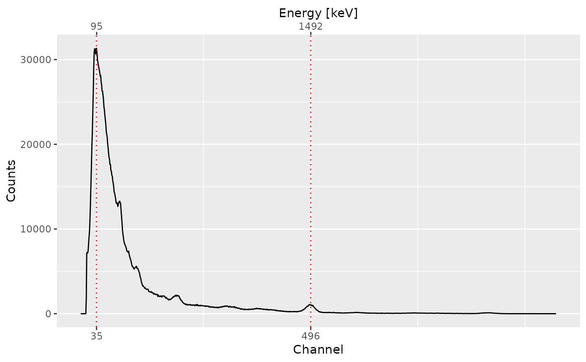

Finds local maxima in sequential data.
peaks_find(object, ...) # S4 method for GammaSpectrum peaks_find(object, method = c("MAD"), SNR = 2, span = NULL, ...)
| object | A GammaSpectrum or PeakPosition object. |
|---|---|
| ... | Extra parameters to be passed to internal methods. |
| method | A |
| SNR | An |
| span | An |
An object of class PeakPosition.
A local maximum has to be the highest one in the given window and has to be higher than \(SNR \times noise\) to be recognized as peak.
The following methods are available for noise estimation:
Median Absolute Deviation.
Other signal processing:
baseline,
signal_integrate(),
signal_slice(),
signal_stabilize(),
smooth()
N. Frerebeau
## Import a Canberra CNF file spc_file <- system.file("extdata/LaBr.CNF", package = "gamma") spc <- read(spc_file) ## Find peaks (pks <- peaks_find(spc))#> 2 peaks were detected: #> channel energy #> 1 35 94.93504 #> 2 496 1491.71339